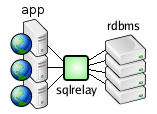
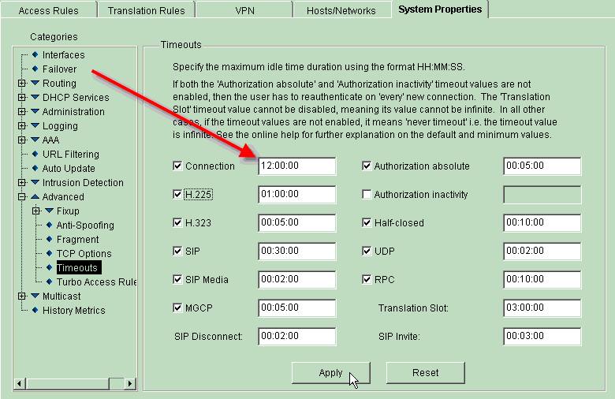

SQL Relay is a database connection management solution.

SQL Relay sits between your app and the database and provides functionality not typically provided by the database directly.
The main features of SQL Relay are:
Persistent database connection pooling - makes database driven web-based applications faster and more efficient
Solves - "I've analyzed my app's performance and it seems to be spending a lot of time just logging into the database."
Proxing - access databases from unsupported platforms
Solves - "I need to access MS SQL Server from Linux or Oracle from FreeBSD (or other unsupported platform)."
Throttling - prevents databases from becoming overloaded
Solves - "When I run enough web servers to handle the traffic, it slams the database, even though most of the database connections appear to be idle."
High Availability - provides load balancing and failover with replicated or clustered databases
Solves - "I wish there was a cheap and easy way to automatically distribute traffic to the nodes in my database cluster and manage outages."
Query Routing - conditionally sends queries to one database or another
Solves - "My database is getting slammed. I could replicate it but then I'd have to rewrite my app to send DML to the master and somehow distribute selects over the slaves."
Drop-In Replacement Libraries - aims an existing MySQL/MariaDB or PostgreSQL app at SQL Relay without modification
Solves - "I wrote my app using the native MySQL/MariaDB API but the company is migrating to Oracle. I can tweak the queries to work with Oracle but I really don't want to have to modify the app to use OCI."
SQL Relay has client API's for most modern programming languages and drivers for many popular database abstraction API's.
SQL Relay is powerful but it does have some limits.
It is a tool in a chain - another tier in a multi-tiered application - designed to solve specific problems. It is not a database-enabled application development environment like Access or Delphi or modern equivalents. It's not a reporting gateway like Crystal Reports. It is not a database itself.
There are some features that SQL Relay currently lacks that are either being worked on, or at least planned though.
The MySQL/MariaDB Front-End Module makes SQL Relay a transparent database proxy for MySQL/MariaDB. You can just aim SQL Relay at MySQL/MariaDB and aim your app at SQL Relay. But, SQL Relay currently lacks Front-End Modules for other database protocols, so it can't be used as a transparent proxy for other databases. SQL Relay has it's own client/server protocol and API though. If your app uses a database abstraction API like PHP PDO, Perl DBI or ODBC, you can update the connect string to use the SQL Relay driver. You could also potentially use the drop-in replacement library for MySQL/MariaDB or drop-in replacement library for PostgreSQL. Otherwise you'd need to modify your app to use the SQL Relay API. Efforts are underway to add support for various other native database protocols though.
SQL Relay can provide a single-point of access for replicated databases but it does not provide replication. It cannot keep multiple databases in sync.
Similarly, though SQL Relay can provide a single-point of access for multiple databases, it does not currently provide a mechanism for joining tables across databases or sending the same query to multiple databases and merging the result sets.
SQL Relay does provide a query translation framework and various query translation modules. However SQL Relay cannot automatically translate queries from one syntax to another. Though it can be used to aim an app originally written for MySQL/MariaDB at Oracle, for example, it cannot (yet) transparently convert queries in MySQL/MariaDB syntax to Oracle syntax. If you want to use aim an app originally written for one database at another, you would have to modify the queries in the application, or write/configure custom query translation modules to translate specific queries from one form to another.
See Persistent Database Connection Pooling.
See Proxying.
See Throttling.
See High Availability.
See High Availability.
See High Availability.
See Query Routing.
See Using the SQL Relay drop-in replacement library for MySQL/MariaDB and Using the SQL Relay drop-in replacement library for PostgreSQL.
See Supported Databases.
See the Supported Platforms section of the installation document.
See Native API.
See Database Abstraction Layers.
The native SQL Relay Client API's are database abstraction layers as well, as the SQL Relay server can be connected to a variety of database and applications written using an SQL Relay Client API can talk to any SQL Relay server.
See Substitution and Bind Variables.
See Multi-Row Fetches.
See Client-Side Result Set Caching.
SQL Relay's connection daemons log in and maintain connections to databases. These connection daemons advertise themselves with a listener daemon which listens on an inet port and/or unix socket for client connections. When a client connects to the listener, if a connection daemon is available, the listener hands off the client to that connection. If no connection daemon is available, the client waits in a queue until one is. Once a client is handed off to a connection daemon, the client communicates to the database through the connection maintained by that daemon.
There are many way that SQL Relay can speed up or improve the efficiency of your website, but here some common examples.
Let's say you're running PHP's againt a database like Oracle, MS SQL Server or DB2 which have to log into and out of the database each time they run. If you use SQL Relay to maintain persistent connections to the database and just log into and out of SQL Relay, you can reduce the amount of time spent establishing database connections and handle more requests per-second. This is both because the time-cost of connecting to SQL Relay is smaller than the time-cost of connecting to a transactional database, and because the SQL Relay client library is smaller than most database client libraries, resulting in a more lightweight program.
Let's say you're using Apache, mod_php and Oracle and you determine by doing all sorts of analysis that you need to keep 30 Apache processes running to provide adequate response. Since most of your site isn't database-driven, on average, no more than 5 PHP's actually access the database simultaneously. Currently, you're using persistent connections to defeat the time-cost of logging into Oracle, but you have to maintain 30 connections (1 per web server process) which takes up a lot of memory on both the web server and database server and you really only need 5 connections. By using SQL Relay you can reduce the number of Oracle connections to the 5 that you need, continue to run 30 Apache processes and reclaim the wasted memory on both machines.
Many websites run applications written in a combination of languages, some of which have their own database pooling systems. Perl modules, for example, can use Apache-DBI and PHP has a persistent database connection system, but a PHP cannot use an Apache-DBI connection and a Perl module cannot use a PHP persistent connection. Thus in order to make sure that there are enough database connections for each platform, many more web-server processes have to be run, perhaps twice as many. If the PHP's and Perl modules used SQL Relay instead, they could share databse connections and reduce the number of web-server processes and database connections.
SQL Relay makes it easy to distribute load over replicated servers. A common scaling solution when using MySQL/MariaDB or PostgreSQL in a read-only web environment is to run several web servers with a dedicated database server for each web server or group of web servers and update all the databases simultaneously at scheduled intervals. This usually works pretty well, but sometimes database or web servers get runs of heavy load while others are idle. In other cases, an uneven number of machines is required. For example, your application may need 3 web servers but only 2 database servers or vice-versa and buying 3 of each would be wasteful. Moreover, in most cases, the servers have to be equivalently powerful machines. You can't usually just add another cheap machine that you have lying around into the pool. SQL Relay can connect to multiple, replicated or clustered database servers, providing web-based applications access to whichever server isn't busy. SQL Relay can also be configured to maintain more connections to more powerful machines and fewer connections to less powerful machines, enabling unevenly matched machines to be used in the same database pool. Collectively, these features allow you to save money by using only the exact number of servers that you need and by enabling you to use spare hardware in your database pools.
See Proxying.
SQL Relay is both a connection pool and database abstraction layer. Lets say that your app currently connects directly to a database which has an insignificant connection delay but you want to migrate it to a database that has features that you want, but also has a significant connection delay. If you first set up instances of SQL Relay to talk to both databases, and then put SQL Relay between your app and the database, you can switch between the databases by changing the connection parameters in your app to point to different instances of SQL Relay, as you would with any other database abstraction layer. However, since SQL Relay is also a connection pool, you don't incur the connection delay associated with the new database.
If your app was written using a database abstraction API supported by SQL Relay such as ODBC, ADO.NET, Perl DBI, etc. then this is straightforward. You can just change the connect string to point to the appropriate instance of SQL Relay.
If your app was written using a database specific API then you might have to port your app to use the SQL Relay API, or a supported DB abstraction layer first.
If your app was written using a MySQL/MariaDB or PostgreSQL API then you might be able to use the SQL Relay Drop-In Replacement Library for MySQL/MariaDB or the SQL Relay Drop-In Replacement Library for PostgreSQL without modifying your app at all.
SQL Relay doesn't currently do query translation though. There might be queries in your app that are written using database-specific syntax that would need to be modified to use the new database.
See High Availability.
Yes. In the instance tag in the configuration file, set authtier="database". See the SQL Relay Configuration Reference for more information.
SQL Relay does this very efficiently when used with Oracle. The database must be configured properly though. See this document for step-by-step instructions.
Oracle allows a process that is connected to the database to switch users without disconnecting from the database. When used with other databases, SQL Relay logs out and logs back in to the database whenever it needs to switch users.
Yes, see Query Routing.
Probably. You'll need to set up SQL Relay to route queries and use the Drop-in Replacement Library for MySQL/MariaDB to redirect your app to use SQL Relay.
See Query Routing for details on how to set up SQL Relay as a query router.
See Using the SQL Relay drop-in replacement library for MySQL/MariaDB for details about how to use the drop-in replacement library.
Yes, see Query Filtering.
Yes. However...
The configure script looks hard for the instantclient installation but if you installed from a non-RPM distribution of instantclient, then you might have to use use the --with-oracle-instantclient-prefix option of the configure script. For example, if you unzipped the instantclient distro in /opt/oracle and it created a directory called /opt/oracle/instantclient_11_2, then you should use:
./configure --with-oracle-instantclient-prefix=/opt/oracle/instantclient_11_2
Many web-based apps have to log into and out of the database each time they generate a page. With native database API's, connecting directly to the database, logging in can take a long time. SQL Relay maintains persistent database connections and is much faster to connect to. Web-based applications generally run faster when using SQL Relay than when using a native API.
Native database API libraries are often very large. The SQL Relay API's are lightweight. Web-based applications that use it generally use less memory than when using a native API.
The DBI-Proxy module is Perl-specific, or at least very challenging to use from other languages. SQL Relay likely outperforms DBI-Proxy since DBI-Proxy is primarily targeted at providing access to databases from unsupported platforms, not at improving application performance, though I have never tested one against the other. SQL Relay can provide access to databases from unsupported platforms as well, even platforms for which there is no unix support using the ODBC connection and an ODBC to ODBC bridge.
SQL Relay is more lightweight and potentially faster than Apache-DBI and is competitive in speed with PHP's persistent connections. SQL Relay can be used to provide a connection pool to multiple machines and has more backend features than Apache-DBI or PHP. However, the DBI and PHP API's are generally considered to be simpler to implement.
When using Apache-DBI or PHP's persistent connections, a connection is opened to the database for every web server process. Frequently, web sites need to run large numbers of processes to provide adequate response. As the number of database connections grows, resources get strained and a lot of database connections go unused most of the time.
If a website runs a mixture of Perl modules and PHP scripts, the issue can be doubled.
SQL Relay makes more efficient use of resources by maintaining fewer persistent connections to the database and funnelling all database requests through those connections. When the number of database session requests exceeds the number of persistent connections, the session requests are queued. This ultimately causes delayed response to the client, but keeps the database running smoothly. In most cases, the delay is negligable and the tradeoff is acceptable.
See Supported Databases.
Here's the most common thing that causes this problem...
Following installation, the permissions on the tnsnames.ora file are often set to 640, meaning the read-write for the oracle user, read-only for the oinstall group and no permissions for everyone else.
If the runasuser and/or runasgroup settings in the configuration file are set to a user and/or group that can't read the file, then SQL Relay will fail to connect to the database. The examples generally show runasuser and runasgroup being set to "nobody", which won't work with the default settings for the tnsnames.ora file.
There are multiple solutions. Perhaps the simplest is to change the permissions using:
chmod o+r tnsnames.ora
Another solution is to run SQL Relay as the oracle user and/or oinstall group, or to run it as a user that is in the oinstall group.
A less common, but not terribly uncommon error is described below.
This error means that the Oracle OCI library, which SQL Relay uses, couldn't find something that it needed to set up the environment.
The most common cause is an incomplete installation. Try running sqlplus as the oracle user. If it works, then the installation probably isn't incomplete. If it doesn't, then you probably need to reinstall Oracle, or at least the client components, or Instant Client components if you're using that.
The next most common cause of this is a permissions issue. Something under the ORACLE_HOME (or Instant Client installation directory, if you're using Instant Client) isn't readable or executable by the user that SQL Relay is trying to run as. Try running sqlplus as the same user and see if it works. If it does then there probably isn't a permissions issue. If it doesn't, then there could be a permissions issue.
The next most common cause is an invalid ORACLE_HOME environment variable, or invalid oracle_home setting in the configuration file. The ORACLE_SID environment variable, or oracle_sid setting in the configuration file, can either refer to an entry in the tnsnames.ora file or it can just be an fully qualified entry itself. In the case of the former, the ORACLE_HOME must be set to a valid directory, under which network/admin/tnsnames.ora can be found. In the case of the latter, when using Oracle 8 and 8i or any version of Oracle Instant Client, ORACLE_HOME can be set to anything at all or left empty, but when using Oracle 9i and up, ORACLE_HOME must be set to a valid location.
There are a few common causes of this problem...
The server parameter in the string attribute of the connection tag does not refer to the DNS name of the server. Rather it refers to an entry in the "interfaces" or "freetds.conf" files. The SAP/Sybase and FreeTDS libraries look for that file in default places (usually /opt/sap/interfaces or /etc/freetds.conf), but if the file is installed somewhere else and the library can't find it, it will not be able to figure out what host/port the server is running on. One way to tell SQL Relay where the file is located is to set the SYBASE environment variable to the directory containing the file before starting SQL Relay. Alternatively, the string attribute of the connection tag takes a "sybase" parameter which sets the environment variable.
Another possibility...
Some Linux Distributions set the LANG environment variable to a value that is not supported by older versions of SAP/Sybase ASE. For example, LANG=en_US.iso885915. If SQL Relay fails to start, try setting LANG to something that is defined in locales/locales.dat under your SYBASE directory such as en_US for english. The LC_ALL environment variable needs to be set to something that is defined in locales/locales.dat as well. SQL Relay version 0.35 and higher have a connectstring parameter for SAP/Sybase connections called "lang" which does the same thing.
Another possibility...
SAP/Sybase and FreeTDS both provide the libct.so library and the ctpublic.h header file. If FreeTDS is installed from an RPM or other package, it is possible for its libct.so to be installed in /usr/lib and its header file to be installed in /usr/include. This can cause the SAP/Sybase connection to be compiled against ctpublic.h and linked against libct.so from FreeTDS rather than from SAP/Sybase.
Alternatively, if the SAP/Sybase header and library end up in those locations (ie. if they were manually copied there) then the FreeTDS connection could be compiled or linked against them.
Generally, the solution is to install FreeTDS somewhere other than /usr and omit the FreeTDS and SAP/Sybase library paths from /etc/ld.so.conf, /etc/ld.so.conf.d and LD_LIBRARY_PATH. By default, the build uses rpath's to cause the connections to look for libraries in the exact place that they were found at compile time, causing each connection to find the right library. This option can be turned off though. In that case, LD_LIBRARY_PATH should be set before running sqlr-start to assure that the connection dynamically links against the proper library. To see which libraries the connection will link against, run "ldd /usr/local/firstworks/libexec/sqlrelay/sqlrconnection_freetds.so" or "ldd /usr/local/firstworks/libexec/sqlrelay/sqlrconnection_sap.so"
The configure script displays a warning that should encourage people to exercise care when compiling FreeTDS and SAP/Sybase connections. However, even if each connection is compiled against the proper header file, it's possible for either connection to dynamically link against the wrong library at run time. Hopefully, one day, FreeTDS will support everything that the native SAP/Sybase libraries support and there will simply be an option to link the SAP/Sybase connection against one or the other.
You must have built SQL Relay against a really old version of FreeTDS. Before FreeTDS version 0.53, calling the FreeTDS function to get the number of affected rows would cause a segmentation fault. SQL Relay detects the FreeTDS at compile time and only enables affected rows if the version of FreeTDS is greater than 0.52. If you compile against an earlier version of FreeTDS, a -1 is returned for affected rows as if the database didn't support the feature.
The short answer is... If you're doing nested selects, don't call setResultSetBufferSize() with a non-zero argument.
The longer answer is that the TDS protocol doesn't support fetching mulitple result sets simultaneously through the same connection. Somehow the SAP/Sybase client API works around this but FreeTDS does not.
SQL Relay can work around it by fetching the entire result set and caching it on the client, which is SQL Relay's default behavior, but using setResultSetBufferSize() with a non-0 argument defeats this behavior, causing the result set to be fetched in chunks rather than all-at-once. If you do this and then run nested selects then the result set from the outer select will still be pending when the inner select is run and FreeTDS will return this error.
So, when using FreeTDS on the server and nested selects on the client, don't use setResultSetBufferSize() with a non-0 argument and everything will work (though with very large result sets it might work slowly and consume inordinate amounts of memory), otherwise you'll get that error.
See the FreeTDS FAQ for more info.
The sqlrconnection_sybase module is compiled against SAP/Sybase ctlib; the libraries that come with SAP/Sybase Adaptive Server Enterprise. They use a protocol called TDS (Tabular Data Stream) to talk to the database.
The sqlrconnection_freetds module is compiled against FreeTDS, an open-source implementation of the TDS protocol and ctlib.
Very old versions of Microsoft SQL Server are compatible with SAP/Sybase ctlib, but modern versions are not. FreeTDS is compatible with all versions of SAP/Sybase Adaptive Server Enterprise and Microsoft SQL Server. So, if you want to access a modern version of Microsoft SQL Server, you must use the FreeTDS connection. You can also access all versions of SAP/Sybase with the FreeTDS connection.
The native PostgreSQL API returns data type ids (numbers), rather than data type names, so by default, SQL Relay does the same when run against PostgreSQL. If you prefer getting type names, you can set the mangletypes connect string value to "yes" in your configuration file.
For example, the following connectstring will instruct SQL Relay to return type names instead of numbers:
user=exampleuser;password=examplepass;db=exampledb;mangletypes=yes
The following connectstring will instruct SQL Relay to return type numbers:
user=exampleuser;password=examplepass;db=exampledb;mangletypes=no
Leaving the mangletypes parameter out altogether is the same as setting it to "no".
The most common cause of this has to do with character set translation.
Data is transferred from the SQL Relay server process to the SQL Relay client process unmodified, but if you're using one character set in your database (or in a specific table or column of your database) and the SQL Relay server process is using a different character set, the database client library will translate the result set when it is transferred from the database to the SQL Relay process and will then be passed on to the SQL Relay client in its translated state.
If the character set used by the SQL Relay server process is missing characters from the character set used by the database, then ?'s are often substituted. Other translations can occur too such as the removal of accents or creation of total garbage.
Configuring the character set used by the SQL Relay process is different for each database.
When using MySQL/MariaDB, PostgreSQL, FreeTDS, SAP/Sybase and Firebird databases, the character set can be set by setting the charset variable in the connect string of the configuration file.
When using Oracle, the character set can be set by setting the nls_lang variable in the connect string.
When using DB2 or Informix, the character set can be set by setting the lang variable in the connect string.
Other databases don't support any character set translation at all. Data is just returned from the database as-is, byte-by-byte.
In the case of Oracle, the nls_lang connect string variable just sets the NLS_LANG environment variable. When using versions of SQL Relay older than listed above, the NLS_LANG environment variable must be set prior to running SQL Relay to configure the character set.
In the case of DB2 or Informix, the lang connect string variable just sets the LANG environment variable. When using versions of SQL Relay older than listed above, the LANG environment variable must be set prior to running SQL Relay to configure the character set.
To set up Oracle to authenticate a user against the OS, first create a user in linux/unix, then log into oracle as the sys user and create a corresponding user as follows. In this example, we'll assume that you created an OS-level user named dmuse:
CREATE USER ops$dmuse IDENTIFIED EXTERNALLY
GRANT CONNECT TO ops$dmuse
Now you can log in as dmuse and connect to the database using sqlplus / and you will not be prompted for a username and password.
In the configuration file, set the runasuser attribute of the instance tag to the user that you want to connect as and leave out the user, password and oracle_sid parameters of the string attribute of the connection tag.
For example, here's a normal (non-OS-authentication) configuration which connects to the ora1 instance of oracle using exampleuser/examplepassword:
<instance ... runasuser="oracle" ...>
...
<connections>
<connection ... string="user=exampleuser;password=examplepassword;oracle_sid=ora1" .../>
</connections>
</instance>
Here's one that uses the oracle OS-user to connect. This is analagous to logging in as oracle and running sqlplus /:
<instance ... runasuser="oracle" ...>
...
<connections>
<connection ... string="" .../>
</connections>
</instance>
It's possible to set up an externally authenticated user to have access to other SID's and use sqlplus /@someotherschema to connect to them. To configure SQL Relay to connect to another schema, just add the oracle_sid parameter to the string attribute of the connection tag. For example, use the following to connect to ora1.
<connection ... string="oracle_sid=ora1" .../>
How old is your MySQL server?
Ancient versions of MySQL didn't support transactions at all. Old versions did, but only if you explicitly created tables using a table type that supports transactions like InnoDB:
create table exampletable (col1 int) type=innodb
Modern versions create transaction-capable tables by default.
However, if you're accustomed to other databases, you may still be surprised at modern MySQL/MariaDB's transaction behavior. MySQL/MariaDB supports several isolation levels and the default level is different from other database. See the official MySQL/MariaDB documentation for more information on this, but a summary follows.
With most databases, if a client has a connection open and commits a set of inserts, updates or deletes, then those changes are immediately visible to other clients using separate connections.
With MySQL/MariaDB, after beginning a transaction, the database will appear to be unaffected by queries run in other transactions until the transaction you are running is committed. So, if another client commits a set of inserts, you won't see them until you commit your transaction.
If you're in autocommit mode though and haven't begun a transaction, then you will immediately see all changes committed by other clients. But as soon as you begin a transaction, you will no longer see changes to the database until you commit your transaction.
As of SQL Relay 0.39, when using MySQL/MariaDB, whenever a client connects to the server, the MySQL/MariaDB connection daemon executes a commit before running the first query to sync things up. This emulates the behavior that a client would expect if it was making a new connection directly to the database.
SQL Relay uses FreeTDS to connect to MS SQL Server. SQL Relay can also use FreeTDS to connect to SAP/Sybase.
FreeTDS recognizes SAP/Sybase DATE/DATETIME columns and MS SQL Server DATETIME columns as DATETIME types and formats them according to the rules defined in FreeTDS's locales.conf file for the locale of the SQL Relay server.
However, FreeTDS doesn't recognizes MS SQL Server DATE columns as DATETIME types. Rather it recognizes them as CHAR types and formats them in YYYY-MM-DD format universally.
So when using MS SQL Server, if you select a DATE and DATETIME column you might get results like:
DATE: 2013-08-05
DATETIME: Aug 5 2013 09:25:25:917PM
instead of what you'd get with SAP/Sybase:
DATE: Aug 5 2013 12:00:00:000AM
DATETIME: Aug 5 2013 09:25:25:917PM
The dateformat parameter in the configuration file can be used to normalize these DATE fields but there is an interesting potential issue.
The date/time conversion routines take any fields in the result set that appear to be a date, time or date/time combination and translate them to the format specified by the dateformat, timeformat and datetimeformat parameters. However the routines must also use the dateddmm parameter to determine whether the month or day comes first. For example, the date 03/04/2005 could be recognized as either March 4, 2005 or April 3, 2005. If dateddmm="yes" is set then it will be recognized as the latter.
Without a special exception though, setting dateddmm="yes" would cause problems when fetching DATE columns from MS SQL Server because they are always in YYYY-MM-DD format. To resolve this, for MS SQL Server, when a date in the result set appears to be in the YYYY-XX-XX format, the dateddmm parameter is ignored and it is presumed to be in YYYY-MM-DD format.
Ideally we'd only ignore dateddmm for MS SQL Server, on DATE type columns that appeared to be in the YYYY-XX-XX format. But, since DATE columns are returned as CHAR type and we can't tell whether a column was fetched from the database or just a literal in the original queriy then we can't be that selective. We just have to ignore dateddmm for everything in YYYY-XX-XX format, whether fetched from a DATE column or from a CHAR column or from a string literal in the original query.
What all of this means is that when using date/time conversion with MS SQL Server and dateddmm="yes" is set, dates stored in CHAR fields in YYYY-XX-XX format must be stored in YYYY-MM-DD format and that string literals in the original query that are in YYYY-XX-XX format must also be in YYYY-MM-DD format.
Of course, if you're not using MS SQL Server and date/time conversion and setting dateddmm="yes" then you don't have to worry about any of this.
SQL Relay is targeted for web-based applications. For the most part, queries with relatively small result sets are used to build web pages. For small result sets, it more efficient to buffer the entire result set than to step through it, building the page. It's usually faster because it reduces network round-trips and allows one program to drop the connection to SQL Relay, freeing it up for more programs to use while the first program builds its page.
For large result sets it can be impractical to buffer the entire result set. Use the setResultSetBufferSize() method or the sqlrcur_setResultSetBufferSize() function to specify how many rows of the result set to buffer at once.
That depends on the database you're using. Some databases support named bind variables while others only support binds by position. Below are pseudocode examples of both.
Oracle example:
sqlrconnection *con=new sqlrconnection(...);
sqlrcursor *cur=new sqlrcursor(cur);
cur->prepareQuery("select * from table where charcol=:charval and intcol=:intval and floatcol=:floatval");
cur->inputBind("charval","hello");
cur->inputBind("intval",10);
cur->inputBind("floatval",5.5,1,1);
cur->executeQuery();
delete cur;
delete con;
SAP/Sybase/MS SQL Server example:
sqlrconnection *con=new sqlrconnection(...);
sqlrcursor *cur=new sqlrcursor(cur);
cur->prepareQuery("select * from table where charcol=@charval and intcol=@intval and floatcol=@floatval");
cur->inputBind("charval","hello");
cur->inputBind("intval",10);
cur->inputBind("floatval",5.5,1,1);
cur->executeQuery();
delete cur;
delete con;
Other DB example:
sqlrconnection *con=new sqlrconnection(...);
sqlrcursor *cur=new sqlrcursor(cur);
cur->prepareQuery("select * from table where charcol=? and intcol=? and floatcol=?");
cur->inputBind("0","hello");
cur->inputBind("1",10);
cur->inputBind("2",5.5,1,1);
cur->executeQuery();
delete cur;
delete con;
Output bind variables work similarly.
sqlrconnection *con=new sqlrconnection(...);
sqlrcursor *cur=new sqlrcursor(con);
cur->prepareQuery("insert into table values ('hello') returning :charval");
cur->defineOutputBindString("charval","hello",10);
cur->executeQuery();
cout << "charval is: " << cur->getOutputBind("charval") << endl;
delete con;
delete cur;
ODBC appears to only support binding by position, so when using ODBC to connect SQL Relay to a database, you must bind by position, even if the underlying database supports binding by name.
A more complete explanation of bind variables is given in here and the programming guides for each language explain how to use them with queries and stored procedures.
Vector binds just aren't implemented yet.
The syntax for creating and executing a stored procedure is different for each database. Each of the "Programming with SQL Relay using the such-and-such API" documents explain how to use stored procedures in detail.
This depends entirely on the database you're using.
For Firebird you just run a query like select * from myprocedure. For DB2, Informix and MySQL/MariaDB you just run a query like call myprocedure. For SAP/Sybase/FreeTDS you just run a query like exec myprocedure. For PostgreSQL you call select * from myprocedure() ... where ... is replaced with a description of the columns that the procedure returns. In all of these cases, the result set is available as if you were selecting from a table.
Oracle is a bit different. A stored procedure may declare a cursor variable, assign the results of a query to it and return it either as a return value or as an output bind variable. You have to use defineOutputBindCursor(), getOutputBindCursor() and fetchFromBindCursor(). The use of these are documented in the various language guides for SQL Relay such as the C++ guide. After calling fetchFromBindCursor(), the result set is available as if you were selecting from a table.
Some databases allow a stored procedure to return multiple result sets, one after the other. SQL Relay does not currently support fetching more than one result set from any query, including one that calls a stored procedure.
There is an exception to this is with Oracle. Since Oracle exposes cursor variables directly, and each cursor variable can be bound to a client-side cursor, one result set can be fetched from each cursor variable exposed by a stored procedure.
You can use output bind variables to get data out of DML with RETURNING clauses if the values returned are scalar. For example:
insert into exampletable values ("one",2) returning :first, :second
Vector values are not supported.
Yes.
There are two classes of temporary tables: "regular temporary tables" and "global temporary tables". Both present problems to connection pooling systems. SQL Relay manages each in different ways.
"Regular temporary tables" are dropped when an application commits or rolls-back the transaction they were created in, or closes its connection to the database. The database itself drops temporary tables when a commit or rollback is issued, so there is no problem there. But, since SQL Relay never logs out of the database and doesn't necessarily issue a commit or rollback at the end of the client session, the database doesn't know to drop the tables when the client disconnects.
To remedy this, SQL Relay watches the queries that are run and builds a list of the temporary tables that were created during the session. Then, when the client closes its connection, SQL Relay drops each of these tables.
"Global temporary tables" more complex. They are never automatically dropped. Whether they are truncated during a commit or rollback depends on whether or not they were created with an "on commit preserve rows" clause. They are always truncated when an application closes its connection to the database though.
As with regular temporary tables, the database handles whatever is supposed to happen when a commit or rollback is issued. But, as with regular temporary tables, since SQL Relay never logs out of the database and doesn't necessarily issue a commit or rollback and the end of the client session, the database doesn't know to drop the tables when the client disconnects.
To remedy this, as it does with regular temporary tables, SQL Relay watches the queries that are run and builds a list of the global temporary tables that are created during the session. Then, when the client closes its connection, SQL Relay truncates each of these tables.
But unlike regular temporary tables, global temporary tables that were created outside of the current session (or outside of SQL Relay entirely) may need to be truncated at the end of the session as well. Since SQL Relay didn't track the creation of these, it doesn't know to truncate them.
To manage this, for databases that support global temporary tables (currently Oracle and Firebird), there's a globaltemptables parameter in the sqlrelay.conf file that can be set to either % or a comma-delimited list of tables. If set to %, then SQL Relay queries the database for a list of global temporary tables at the end of each session, and truncates all of them. If set to a comma-delimited list of tables, then only the tables in the list are truncated. If omitted, then only the tables that were created during the session are truncated. Using % rather than a list is more flexible, but using a list performs substantially better. See the SQL Relay Configuration Reference for more information about this parameter.
Yes. However, you cannot share an instance of an sqlrconnection or sqlrcursor between threads without protecting the calls with mutexes.
When the cacheToFile() and setCacheTtl() methods are called prior to running a query, the client caches the result set from the query in a file on the local file system and attaches a time-to-live tag to the file. The full pathname of this file can be retrieved using the getCacheFileName() method.
The file sits in the cache directory (usually /usr/local/firstworks/var/run/sqlrealy/cache or /usr/local/firstworks/var/sqlrelay/cache) until it is removed by the sqlr-cachemanager program. sqlr-cachemanager scans the files in the cache directory every so often and removes the ones who's time to live has expired.
Until the file is removed, other applications can open the file by name using the openCachedResultSet() methods. At this point, the API acts as if it had run a query that generated that result set.
Server-side result set caching has not been implemented yet.
The most common cause of this problem is configuring SQL Relay to listen on the same port that the database is listening on. For example, if your database is listening on port 3600 and you run SQL Relay on the same machine, you can't configure SQL Relay to listen on port 3600 or it will issue "bind failed" when the listener tries to run.
A slightly less common cause of this problem is configuring SQL Relay to listen on a port that some other service is already listening on. For example, web and cache servers often listen on port 8080 and IRC servers often listen on port 7000. You can see if some other service is listening on the port you want to SQL Relay to listen on by running netstat -ap | grep PORT where PORT is replaced with the port number that you'd like SQL Relay to listen on. If you get anything back from that command, then there is another service already listening on that port.
If you stop and restart SQL Relay and get the message: "bind failed." as the listener is starting, then there are 2 possibilities. First, the old processes may not have been killed successfully. In this case, kill them all and make sure they are dead by using ps -efal | grep sqlr- before restarting them. The second possibility is that the port the listener was listening on didn't get closed. Executing netstat -a | grep PORTNUMBER will reveal any connections still lingering on the port. If all the daemons are dead but the connections are still lingering, wait 2 minutes or so before restarting the daemons. The lingering connections should have timed out by then.
The most common cause of this problem is telling the client to connect to the port that the database is listening on rather than the port that SQL Relay is listening on. For example, if the database is listening on port 3600 and you have an instance of SQL Relay connected to it and have configured SQL Relay to listen on port 9000, then a common mistake would be to try to connect an SQL Relay client to port 3600 instead of port 9000.
Another fairly common cause is that the SQL Relay daemons use semaphores and shared memory segments, and if a daemon crashes unexpectedly, even if you kill all the other daemons, a semaphore or shared memory segment may still be hanging around. These can interfere with future attempts to start up daemons with the same ID. You can use the ipcs command to inspect the shared memory segments and semaphores and the ipcrm command to remove any lingering ones.
Another less common, though still fairly common cause is that the SQL Relay daemons also use temporary files, usually located in /usr/local/firstworks/var/run/sqlrealy or /usr/local/firstworks/var/sqlrelay/tmp. That directory should have 777 permissions, but sometimes it doesn't. The sockseq file in that directory should have 666 permissions, but sometimes it doesn't. The files named ID and ID-CONNECTIONID owned by the user that started the connections in that directory should get removed by sqlr-stop, but sometimes they don't. Stop the SQL Relay server processes, verify these permissions, and verify that the files have been removed, before restarting them.
See Tuning SQL Relay.
If you are running SQL Relay on one machine and the database on a seperate machine, and there is a firewall between the two machines, and no queries have been run in a while, the firewall may "close" the connection between SQL Relay and the database by discarding any packets that it receives from either. However, the firewall does not send "close packets" to either SQL Relay or the database. SQL Relay thinks it's still connected to the database and since the firewall silently discards all packets coming from SQL Relay, it never learns otherwise.
Some database client API's catch this condition and return an obscure error but many do not, they just hang silently forever.
Cisco PIX firewalls are known to cause this problem. Others may as well.
Allegedly, an IOS upgrade will solve the problem for Cisco PIX firewalls, but I don't know what version you have to upgrade to.
Another solution is to turn off the time out.
Yet another solution is to set up a cron job that runs a query periodically using sqlrsh to keep the connection from timing out.
You could also just set up the timeout to be so long that it's really unlikely that it will ever occur. The PIX firewall's default is 1 hour. You can change it from the PIX's command line using a command such as the following:
timeout conn 12:00:00
You can also set it using the graphical web interface as follows:

When SQL Relay first starts up, since no connections are started, no connections are registered with the listener. Clients connect, connections fire up to handle them, clients disconnect, the connections time out and die. However, one of the connections will still remain registered with the listener as an "available connection". This connection cannot die off.
It's really, really complicated why. I tried lots of approaches and couldn't find one that didn't have a fundamental problem.
Basically, here's the code:
listener:
acquireExclusiveAccessToSharedMemoryAmongListenerProcesses();
waitForConnectionToSignalUsToRead();
readRegistration();
signalConnectionThatWeHaveRead();
releaseEclusiveAccessToSharedMemoryAmongListenerProcesses();
connection:
acquireExclusiveAccessToSharedMemoryAmongConnectionProcesses();
writeRegistration();
signalListenerToRead();
waitForListenerToSignalUsThatItHasRead();
releaseEclusiveAccessToSharedMemoryAmongConnectionProcesses();
If the connection dies between signalListenerToRead() and waitForListenerToSignalUsThatItHasRead() or while waiting then obscure problems occur. Most notably, the next connection with a that starts up will not die off. Also, it is certain that the currently registered connection will die at this point because that's where it sits and waits for the listener to hand it a client.
Fundamentally, the listener needs to know that the connection has died off and needs not to signalConnectionThatWeHaveRead(). For the time being, I'm not certain how to do that. So for now, I avoid the problem by making it impossible for a connection to die off there.
Of course, it's always possible to kill the connection manually. In that case though, you would cause the problem that I'm trying to avoid.
The short answer is... The config file isn't readably by "nobody" (or whoever else runasuser is set to).
The longer answer is...
SQL Relay is typically started as root. The sqlr-start command runs as root and starts up the sqlr-listener, sqlr-connection and sqlr-scaler processes as root. They then read the config file and switch to run as whatever user/group are specified in the runasuser and runasgroup parameters (usually nobody). The sqlr-scaler is most likely now running as a non-root user (such as nobody). When it spawns new connections, they start out running as that same non-root user. The root user can always read the config file, but the config file may not have permissions set so that the non-root user can read it. In that case, the sqlr-connection daemon will start up, fail to read the config file, display a message and exit.
To remedy the situation, make sure that the configuration file is readable by each of the users and groups specified in the runasuser/runasgroup attributes inside the file.
Supply a value for the socket attribute and either omit the port attribute or set it to port="".
Note that if neither socket nor port are specified then SQL Relay listens on the default inet port (9000) and doesn't listen on the unix socket at all.
This can happen if a spike of client traffic comes in. If configured to do so, SQL Relay will fork off more connection daemons to handle the traffic. Later when the traffic dies down, the connections that were spawned will still end up handling clients. Each connection daemon will experience longer idle periods than before the spike, but unless those idle periods are shorter than the ttl parameter, the connections will not die off. Setting the ttl shorter should take care of this, but it may take some fine tuning to find the correct ttl.
The parameter maxsessioncount can also help resolve this problem. If it is set greater than 0, then a dynamically spawned connection will only handle that many client sessions before dying off, even if it never goes idle.
Version 0.64 introduced a softttl parameter too, which can also help. If it is set greater than 0, then a dynamically spawned connection will voluntarily exit when it notices that it has been running for longer than that number of seconds, even if it never goes idle. It's a "soft" ttl because the connection only checks after handling a client session, so if it sits idle for a while or has to handle a very long lived client session, then it could run for longer than the softttl.
Using either of these parameters ensures that all spawned connections eventually die off. Like the ttl though, they require some tuning, but setting either of them too low will result in poorer performance rather than additional resource consumption.
This can happen if all connection daemons are occupied, a client calls endSession, and then immediately runs another query. The connection daemon that the client was using has to loop back and tell the listener that it's ready for another client. The client will attempt to reconnect to SQL Relay to run the next query, but depending on the exact timing, if the connetion daemon hasn't finished looping back, to the scaler daemon, it will appear that all connections are busy, but there's a new client attempting to connect and it will fork off a new connection daemon to service it.
There is no easy fix for this and the impact is low. Anything that might be done to guarantee that a new connection daemon won't be spawned would have greater impact. So, if you're using maxqueuelength=0, then expect for this to happen. It should not happen if maxqueuelength is set to some value greater than 0.
Some database API's provide functions for doing commits and rollbacks. Others do not. For those that do not, SQL Relay allocates a new cursor and uses it to execute the commit or rollback as a query. Each time this happens, the Opened Server Cursors count increases. Aside from being confusing, this shouldn't cause any problems.
Prior to version 0.49, the instance tag of the configuration file had a debug attribute that made it possible to enable debug logs for the listeners and connections.
As of 0.49, this has been replaced by an modular logging framework and the classic debug has been reimplemented as a module.
The modern equivalent configuration to the classic debug="listener and connection" configuration is:
<instance ...>
...
<loggers>
<logger module="debug" listener="yes" connection="yes"/>
</logger>
...
</instance>
You can disable logging of either listener or connection daemons by setting "no" to "yes".
See Logging for more information.
Yes. Both database passwords and passwords for accessing SQL Relay itself can be encrypted via extension modules. You can use one of the provided modules or develop your own.
See Password Encryption for more information.
No.
The -config option to sqlr-start allows you to specify a configuration file. So you can create multiple configuration files and specify which one to use when starting SQL Relay.
Configuration files can also be placed under the default configuration directory (usually /usr/local/firstworks/etc/sqlrelay.conf.d) and each will be consulted at startup in addition to the main configuration file (usually /usr/local/firstworks/etc/sqlrelay.conf).
In addition, the -config option can be used to specifiy a comma-separated list of config files or directories, each of which will be consulted during start-up.
Config files can also be located on remote servers and specified by url.
And, if that wasn't enough, a config file can contain lists of other config files, each of which will be consulted during start-up as well.
See the SQL Relay Configuration Guide for more information.